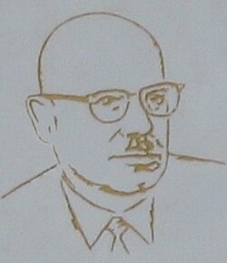

This article includes a list of general references but lacks sufficient corresponding inline citations. (May 2016) |
Mark Krein | |
|---|---|
Марк Крейн | |
 The memorial plaque of Mark Krein, c. 2003 | |
| Born | Mark Grigorievich Krein 3 April 1907 Kiev, Kiev Governorate, Russian Empire |
| Died | 17 October 1989 (aged 82) Odessa, Ukrainian SSR, Soviet Union |
| Citizenship | Soviet Union |
| Alma mater | Odessa University |
| Known for | Functional analysis Krein space Krein's condition Krein's extension theorem Krein–Milman theorem Krein–Rutman theorem Krein–Smulian theorem Akhiezer–Krein–Favard constant Markov–Krein theorem Tannaka–Krein duality |
| Awards | Wolf Prize (1982) |
| Scientific career | |
| Fields | Operator theory mathematical physics |
| Institutions | Odessa University Odessa Civil Engineering Institute |
Academic advisors | Nikolai Chebotaryov |
Doctoral students | Vadym Adamyan Israel Gohberg David Milman Mark Naimark Mikhail Samuilovich Livsic |
{kind=link}
Mark Grigorievich Krein (Russian: Марк Григо́рьевич Крейн; Ukrainian: Марко́ Григо́рович Крейн; 3 April 1907 – 17 October 1989) was a Soviet mathematician, one of the major figures of the Soviet school of functional analysis. He is known for works in operator theory (in close connection with concrete problems coming from mathematical physics), the problem of moments, classical analysis and representation theory.
Early life and career
He was born in Kiev, in the Russian Empire, leaving home at age 17 to go to Odessa. He had a difficult academic career, not completing his first degree and constantly being troubled by antisemitic discrimination. His supervisor was Nikolai Chebotaryov.
He was awarded the Wolf Prize in Mathematics in 1982 (jointly with Hassler Whitney), but was not allowed to attend the ceremony.
David Milman, Mark Naimark, Israel Gohberg, Vadym Adamyan, Mikhail Livsic and other known mathematicians were his students.
He died in Odessa.
Legacy
On 14 January 2008, the memorial plaque of Mark Krein was unveiled on the main administration building of Odesa University in Ukraine.
See also
- Tannaka–Krein duality
- Krein–Milman theorem and Krein–Rutman theorem in functional analysis
- Krein space
- Krein's condition for the indeterminacy of the problem of moments
External links
- O'Connor, John J.; Robertson, Edmund F., "Mark Krein", MacTutor History of Mathematics Archive, University of St Andrews
- Mark Krein at the Mathematics Genealogy Project
- INTERNATIONAL CONFERENCE Modern Analysis and Applications (MAA 2007). Dedicated to the centenary of Mark Krein
- Mark Krein at Find a Grave